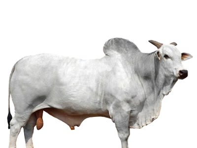
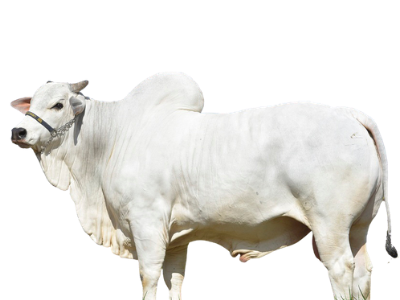

Home
Fazendas
Informações
Contato
 
AR BOVINOS
IMOBILIÁRIA E NEGÓCIOS AGROPECUÁRIOS
CRECI: 3485-MS
Entre em contato agora
FAZENDA NA RODOVIA DE AMAMBAI A PONTA PORÃ, 300 HECTARES
200ha de lavoura
Pronta para plantio
12km da rodovia
Localização
Rua General Câmara 204, Vila Vargas
Amambai-MS
Nome
Email
Telefone
Mensagem
Enviar